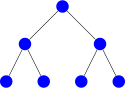
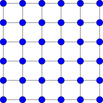
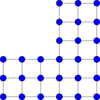
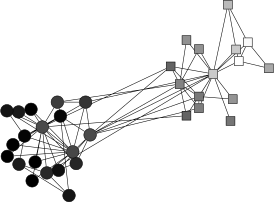
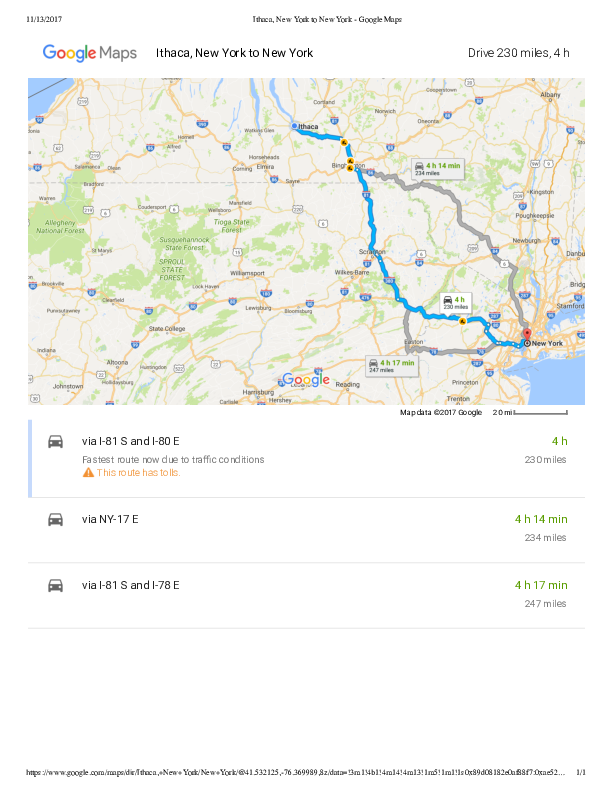
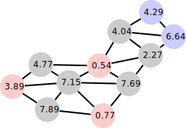
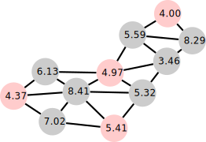
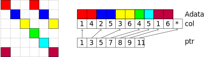

Applications of Parallel Computers
Parallel graph algorithms
Prof David Bindel
Please click the play button below.
Plan
- Some background on graphs
- Applications and building blocks
- Basic parallel graph algorithms
- Representations and performance
- Graphs and LA
- Frameworks
Graphs
Mathematically: \(G = (V,E)\) where \(E \subset V \times V\)
- Convention: \(|V| = n\) and \(|E| = m\)
- May be directed or undirected
- May have weights \(w_V : V \rightarrow \mathbb{R}\) or \(w_E : E : \rightarrow \mathbb{R}\)
- May have other node or edge attributes as well
- Path is \(\left[ \, (u_i,u_{i+1}) \, \right]_{i=1}^\ell \in E^*\), sum of weights is length
- Diameter is \(\max_{s, t \in V} d(s, t)\)
Generalizations
- Hypergraph (edges in \(V^d\))
- Multigraph (multiple copies of edges)
Types of graphs

Types of graphs

Types of graphs

Types of graphs

Types of graphs

Types of graphs

Types of graphs
Many possible structures:
- Lines and trees
- Completely regular grids
- Planar graphs (no edges need cross)
- Low-dimensional Euclidean
- Power law graphs
- ...
Algorithms are not one-size-fits-all!
Ends of a spectrum
| Vertex degree |
Uniformly small |
\(P(\mathrm{deg} = k) \sim k^{-\gamma}\) |
| Radius |
\(\Omega(\sqrt{n})\) |
Small |
| Edge sep |
\(O(\sqrt{n})\) |
nothing small |
| Linear solve |
Direct OK |
Iterative |
| Apps |
PDEs |
Social networks |
Calls for different methods!
Applications: Routing and shortest paths
image
Applications: Traversal, ranking, clustering
- Web crawl / traversal
- PageRank, HITS
- Clustering similar documents
Applications: Sparse solvers
- Ordering for sparse factorization
- Partitioning
- Coarsening for AMG
Applications: Dimensionality reduction

Common building blocks
- Traversals
- Shortest paths
- Spanning tree
- Flow computations
- Topological sort
- Coloring
- ...
... and most of sparse linear algebra.
Over-simple models
Let \(t_p =\) idealized time on \(p\) processors
- \(t_1 =\) work
- \(t_\infty =\) span (or depth, or critical path length)
Don’t bother with parallel DFS! Span is \(\Omega(n)\).
Let’s spend a few minutes on more productive algorithms...
Serial BFS
- Push seed node onto queue and mark
- While Q nonempty
- Pop node from queue
- Visit node
- Push unmarked neighbors on queue
- Mark all neighbors
Parallel BFS
Simple idea: parallelize across frontiers
- Pro: Simple to think about
- Pro: Lots of parallelism with small radius?
- Con: What if frontiers are small?
Parallel BFS: Ullman-Yannakakis
Assuming a high-diameter graph:
- Form set \(S\) with start + random nodes, \(|S| = \Theta(\sqrt{n} \log n)\)
- long shortest paths go through \(S\) w.h.p.
- Take \(\sqrt{n}\) steps of BFS from each seed in \(S\)
- Form aux graph for distances between seeds
- Run all-pairs shortest path on aux graph
OK, but what if diameter is not large?
Serial BFS: Bottom-up
- Set \(d[v] = \infty\) for all vertices
- Set \(d[s] = 0\) for seed \(s\)
- Until \(d\) stops changing
- For each \(u \in V\)
- \(d[u] = \min(d[u], \min_{w \in N(u)} d[w]+1)\)
Parallel BFS
Key ideas:
- At some point, switch from top-down expanding frontier (“are you my child?”) to bottom-up checking for parents (“are you my parent?”)
- Use 2D blocking of adjacency
Single-source shortest path
Classic algorithm: Dijkstra
- Dequeue closest point to frontier, expand frontier
- Update priority queue of distances (in parallel)
- Repeat
Or run serial Dijkstra from different sources for APSP.
Alternate idea: label correcting
Initialize \(d[u]\) with distance over-estimates to source
- \(d[s] = 0\)
- Repeatedly relax \(d[u] := \min_{(v,u) \in E} d[v] + w(v,u)\)
Converges (eventually) as long as all nodes visited repeatedly, updates are atomic. If serial sweep in a consistent order, call it Bellman-Ford.
Single-source shortest path: \(\Delta\)-stepping
Alternate approach: hybrid algorithm
- Process a “bucket” at a time
- Relax “light” edges (wt < \(\Delta\)), might add to bucket
- When bucket empties, relax “heavy” edges a la Dijkstra
Maximal independent sets (MIS)
- \(S \subset V\) independent if none are neighbors.
- Maximal if no others can be added and remain independent.
- Maximum if no other MIS is bigger.
- Maximum is NP-hard; maximal is easy (serial)
Simple greedy MIS
- Start with \(S\) empty
- For each \(v \in V\) sequentially, add \(v\) to \(S\) if possible.
Luby’s algorithm
- Init \(S := \emptyset\)
- Init candidates \(C := V\)
- While \(C \neq \emptyset\)
- Label each \(v\) with a random \(r(v)\)
- For each \(v \in C\) in parallel, if \(r(v) < \min_{\mathcal{N}(v)} r(u)\)
- Move \(v\) from \(C\) to \(S\)
- Remove neighbors from \(v\) to \(C\)
Very probably finishes in \(O(\log n)\) rounds.
Luby’s algorithm (round 1)

Luby’s algorithm (round 2)

A fundamental problem
Many graph ops are
- Computationally cheap (per node or edge)
- Bad for locality
Memory bandwidth as a limiting factor.
Big data?
Consider:
- 323 million in US (fits in 32-bit int)
- About 350 Facebook friends each
- Compressed sparse row: about 450 GB
Topology (no metadata) on one big cloud node...
Graph rep: Adj matrix

Pro: efficient for dense graphs
Con: wasteful for sparse case...
Graph rep: Coordinate
- Tuples: \((i,j,w_{ij})\)
- Pro: Easy to update
- Con: Slow for multiply
Graph rep: Adj list
- Linked lists of adjacent nodes
- Pro: Still easy to update
- Con: May cost more to store than coord?
Graph rep: CSR

Pro: traversal? Con: updates
Graph rep: implicit
- Idea: Never materialize a graph data structure
- Key: Provide traversal primitives
- Pro: Explicit rep’n sometimes overkill for one-off graphs?
- Con: Hard to use canned software (except NLA?)
Graph algorithms and LA
- Really is standard LA
- Spectral partitioning and clustering
- PageRank and some other centralities
- “Laplacian Paradigm” (Spielman, Teng, others...)
- Looks like LA
- Floyd-Warshall
- Breadth-first search?
Graph algorithms and LA
Semirings have \(\oplus\) and \(\otimes\) s.t.
- Addition is commutative+associative with a 0
- Multiplication is associative with identity 1
- Both are distributive
- \(a \otimes 0 = 0 \otimes a = 0\)
- But no subtraction or division
Technically modules over semirings
Graph algorithms and LA
Example: min-plus
- \(\oplus = \min\) and additive identity \(0 \equiv \infty\)
- \(\otimes = +\) and multiplicative identity \(1 \equiv 0\)
- Useful for shortest distance: \(d = A \otimes d\)
Graph BLAS
http://www.graphblas.org/
- Version 1.3.0 (final) as of 2019-09-25
- (Opaque) internal sparse matrix data structure
- Allows operations over misc semirings
Graph frameworks
Several to choose from!
- Pregel, Apache Giraph, Stanford GPS, ...
- GraphLab family
- GraphLab: Original distributed memory
- PowerGraph: For “natural” (power law) networks
- GraphChi: Chihuahua – shared mem vs distributed
- Outperformed by Galois, Ligra, BlockGRACE, others
- But... programming model was easy
- GraphIt - best of both worlds?
Graph frameworks
- “Think as a vertex”
- Each vertex updates locally
- Exchanges messages with neighbors
- Runtime actually schedules updates/messages
- Message sent at super-step \(S\) arrives at \(S+1\)
- Looks like BSP
At what COST?
“Scalability! But at what COST?”
McSherry, Isard, Murray, HotOS 15
You can have a second computer once you’ve shown you know how to use the first one.
– Paul Barham (quoted in intro)
- Configuration that Outperforms a Single Thread
- Observation: many systems have unbounded COST!